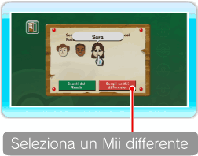

18 |
Dettagli |
 |
Qui puoi controllare i Pokémon nel Ranch, vedere i Mii guardiani e organizzare una parata di Pokémon. Puoi anche scegliere di visualizzare nel Ranch solamente alcuni Pokémon puntando verso POKéMON NEL RANCH e premendo ● Cos’è un guardiano di Pokémon? È un Mii che si prende cura dei Pokémon portati al Ranch da un Allenatore. I Pokémon assegnati a un guardiano sono particolarmente amichevoli con lui. ● Cambia il guardiano dei Pokémon Nello schermo Dettagli, punta verso il Mii che vuoi cambiare e premi Seleziona come guardiano un Mii già presente al Ranch Quando vedi lo schermo scelta guardiano, punta verso il Mii che vuoi cambiare e premi Nota: un Mii contrassegnato da Seleziona come guardiano un Mii che non è al Ranch
 Se vuoi selezionare un altro Mii nello schermo scelta guardiano, punta verso SCEGLI UN Mii DIFFERENTE e premi Nota: non puoi selezionare SCEGLI UN Mii DIFFERENTE se hai già il numero massimo consentito di Mii al Ranch. Una volta terminata la scelta, punta verso OK E TORNA AL RANCH e premi Nota: non puoi cambiare guardiano ai Pokémon di Giulia. Se vuoi cancellare un Mii Quando cancelli un Mii dal Canale Mii, questo scompare anche dal Ranch e i suoi Pokémon vengono assegnati automaticamente a un altro guardiano. ● Aggiungi un Pokémon ai Preferiti Questa opzione diventa disponibile quando ci sono un certo numero di Pokémon nel Ranch. Una volta scelti i tuoi Pokémon Preferiti, puoi decidere di visualizzare solo questi ultimi nel Ranch. Per aggiungere un Pokémon ai tuoi Preferiti, punta verso a sinistra del nome del Pokémon e premi
● Parata Quando punti verso ORGANIZZA UNA PARATA e premi |
 . Puoi scegliere tra TUTTI, PREFERITI o i Pokémon di un solo Allenatore.
. Puoi scegliere tra TUTTI, PREFERITI o i Pokémon di un solo Allenatore. è già assegnato come guardiano di Pokémon al Ranch.
è già assegnato come guardiano di Pokémon al Ranch.
 .
. |
 |
 |